CANPI 2023
CommunAuté NatiOnale des iPa en pneumologIe
L’édition 2023 a eu lieu le
vendredi 13 et samedi 14 octobre
derniers,
à l’Hôtel Mercure Porte de Versailles Expo et a réuni 52
participants.
-
Les présentations des orateurs
-
La frise de l’événement
-
Les photos
-
Les meilleurs moments
Pour cette première édition, le binôme IPA Pneumologue était à l’honneur avec le partage d’expérience de Mme Edwige Moizo Perez, IPA à Tarascon, et Dr Isabelle Huet, Pneumologue libérale à Foix.
Le comité d’organisation avait également pour volonté de parler de l’organisation du métier et de ses perspectives avec l’intervention de Mme Julie Devictor et Mme Ludivine Videloup mais également de la pratique à travers l’exercice et des travaux de recherche menés par les différents intervenants de cette journée.
Cette première édition a été parrainée par l’ANFIPA, la FFP et la SPLF.
- 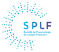
- 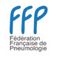
LES PRESENTATIONS
Tout d’abord, identifier les besoins de cette profession récente et de son environnement.
-
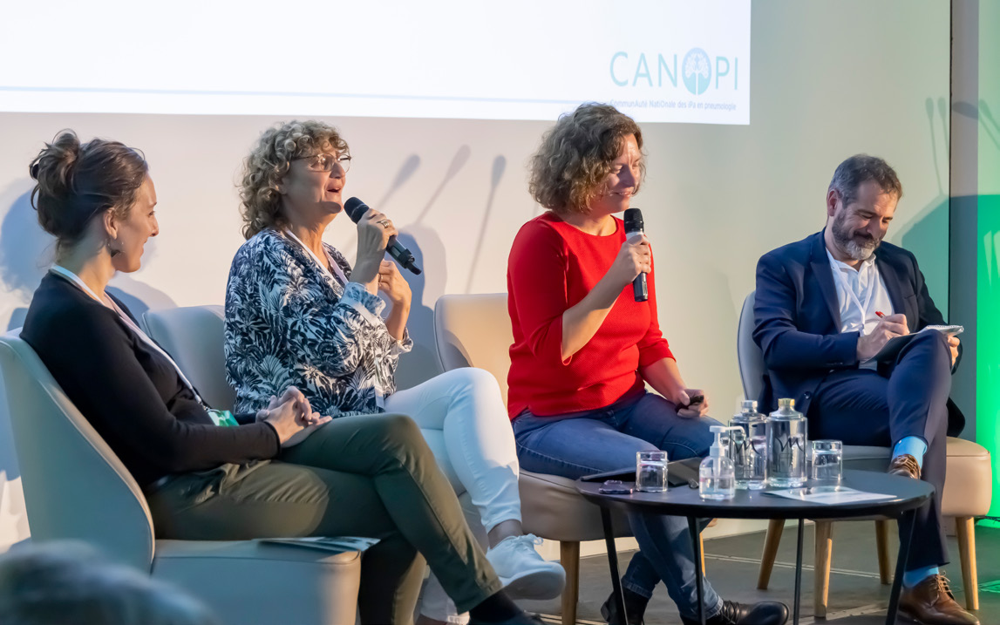 Le binôme IPA-Pneumologue
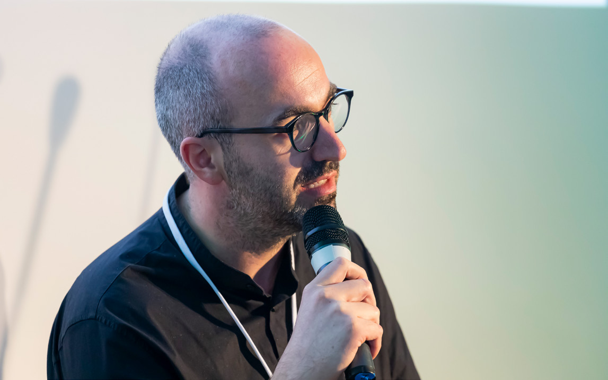 Les missions transversales de l’IPA : l’enseignement et la recherche

La place de l’IPA dans la télésurveillance, le télé-soin et la téléexpertise
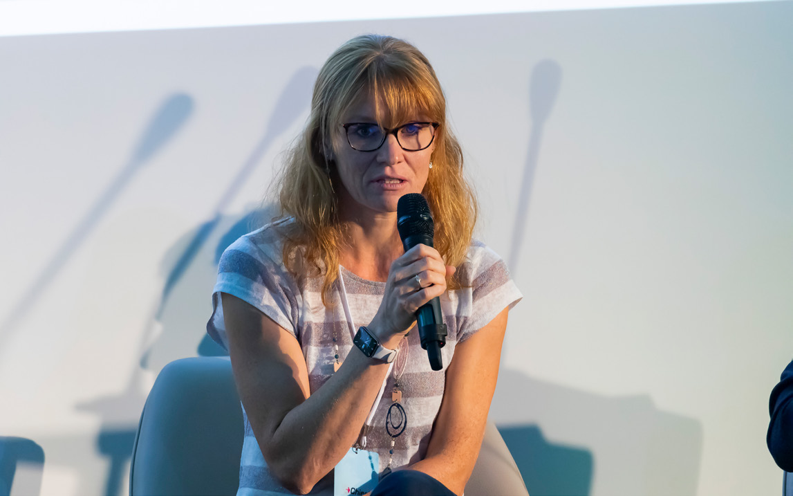 Enquête sur le rôle d’une IPA dans le télé-suivi de la ventilation mécanique à domicile
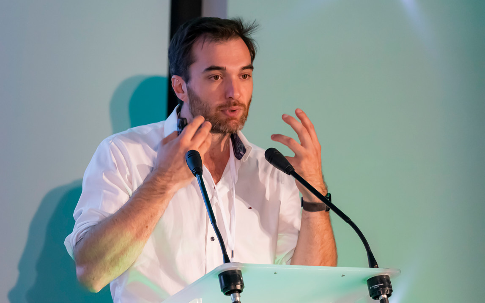 Le rôle de l’IPA dans les pathologies respiratoires du sommeil
La place de l’IPA dans le dépistage des comorbidités de la fibrose pulmonaire idiopathique
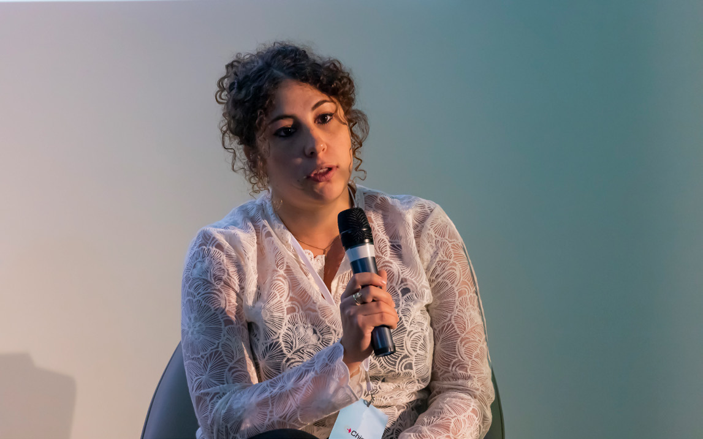 L’IPA dans le suivi des patients présentant une hypertension pulmonaire
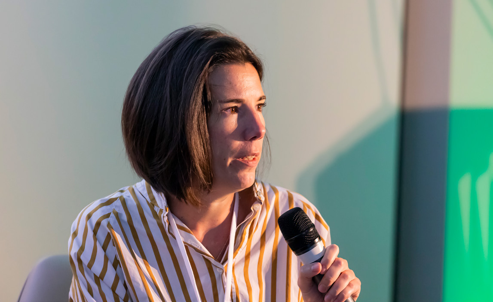 La prise en charge holistique du patient par l’IPA : focus sur la sexualité du patient BPCO
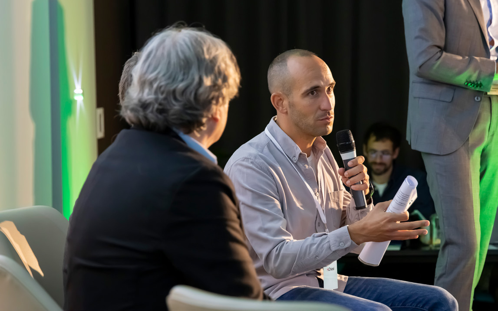 La place de l’IPA dans la réadaptation respiratoire Guillaume Fieutelot
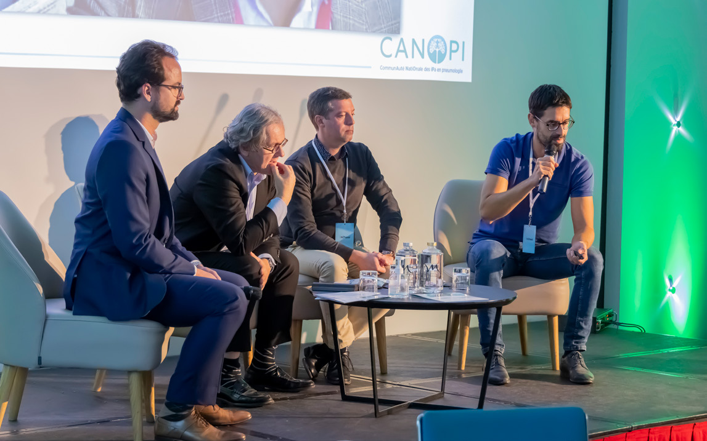 Application HEPHAÏ – Aide à l’observance du patient dans la BPCO et l’asthme
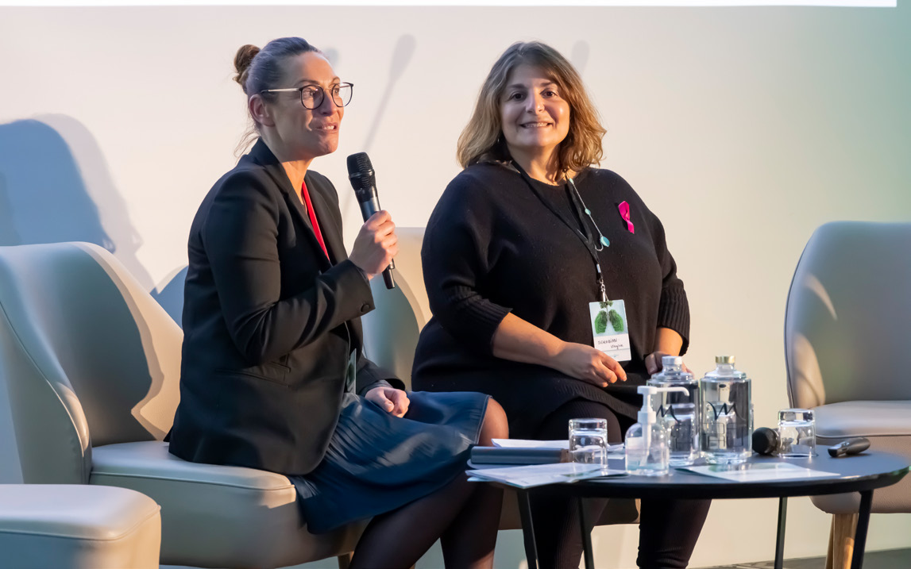 Cartographie nationale des IPA en pneumologie